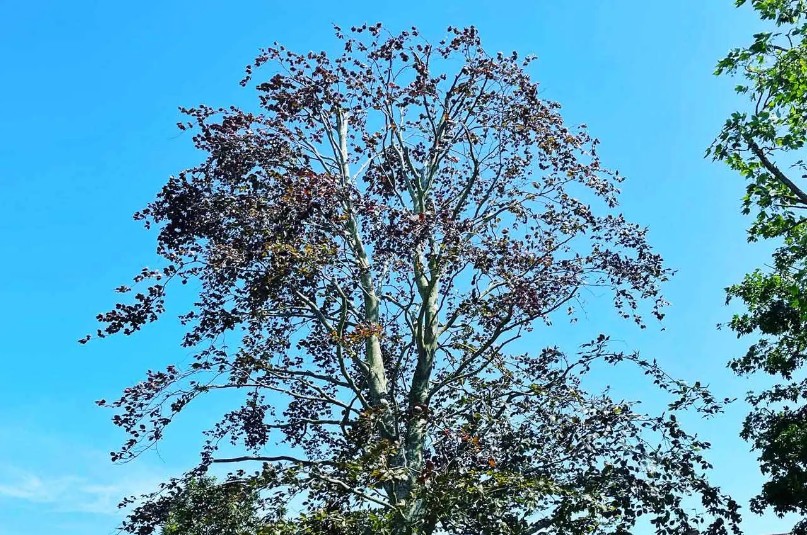
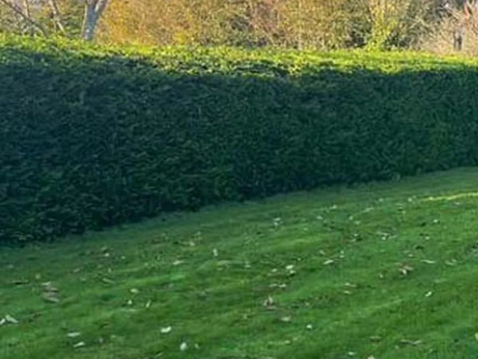
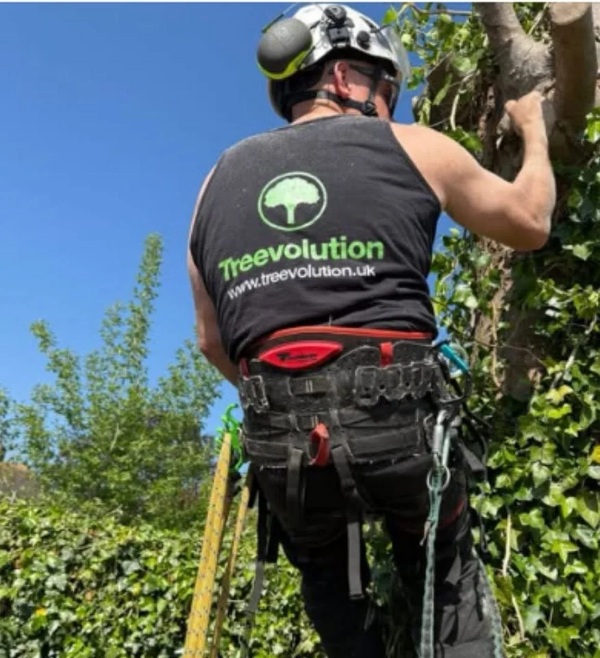
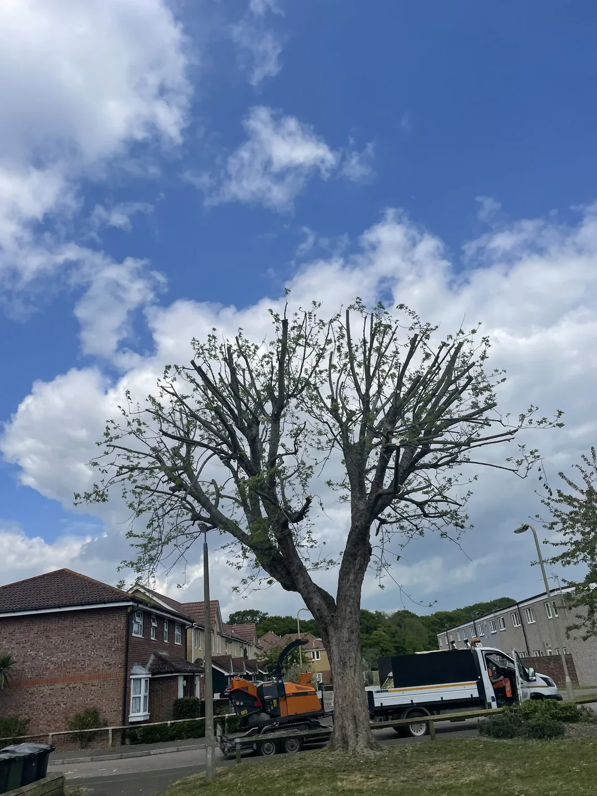
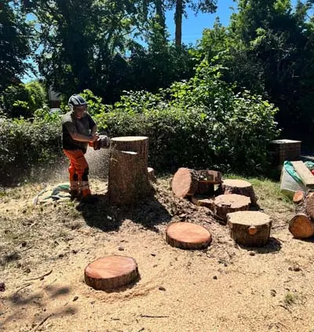
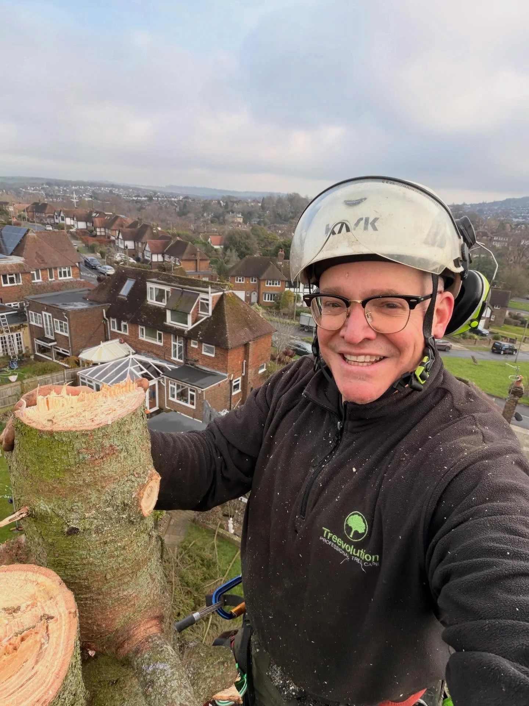

Our work
Real Treevolution projects.
A curated selection from Treevolution’s working archive. The emphasis is on real jobs and useful context rather than filling the page with every available photograph.






Video
See the work moving.
Short, web-optimised footage from Treevolution jobs. Videos are muted and compressed for the website.
Lime tree pollarding
Sycamore take-down • Storrington
Recent updates
Latest work from Treevolution.
Your trees